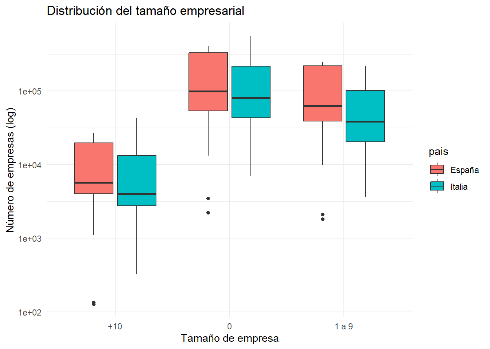
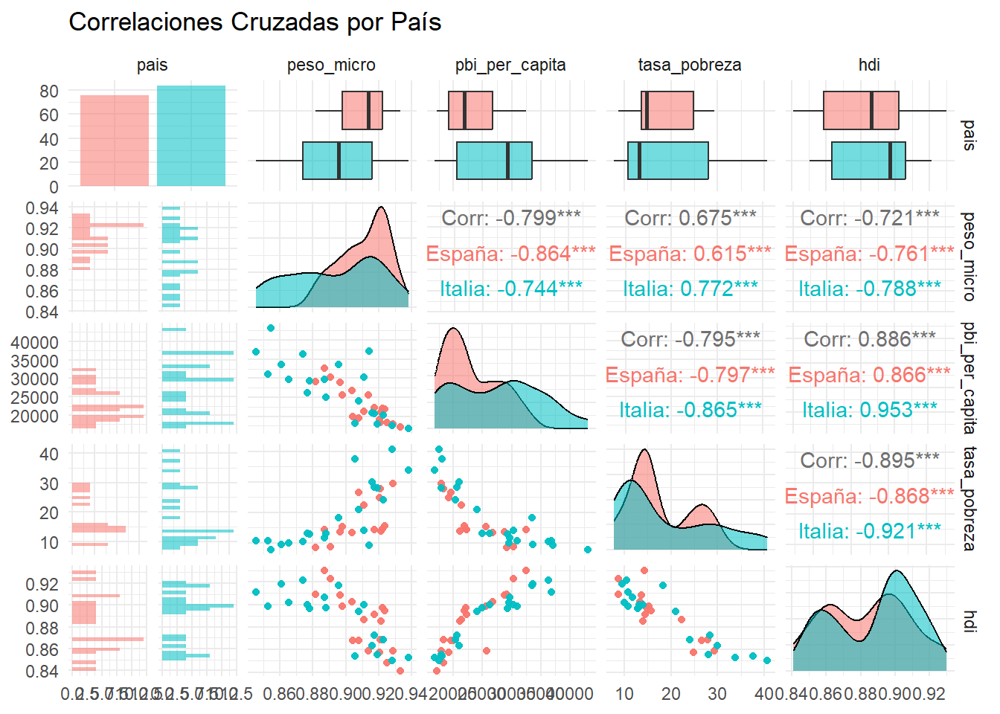
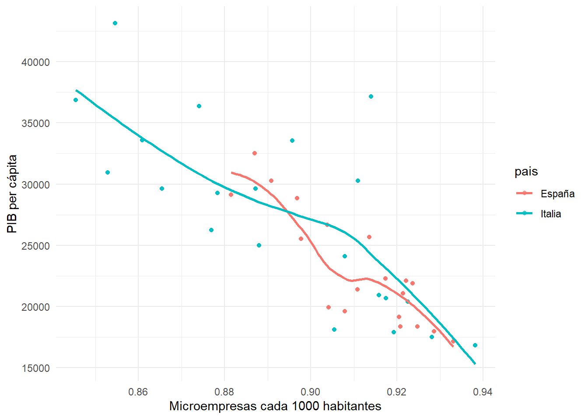
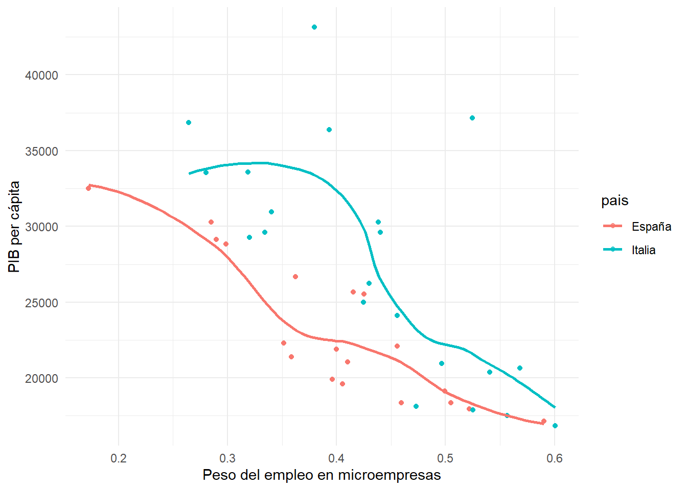
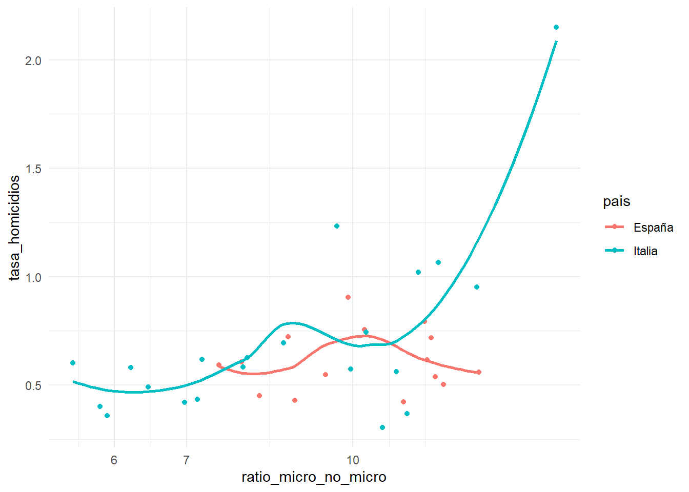
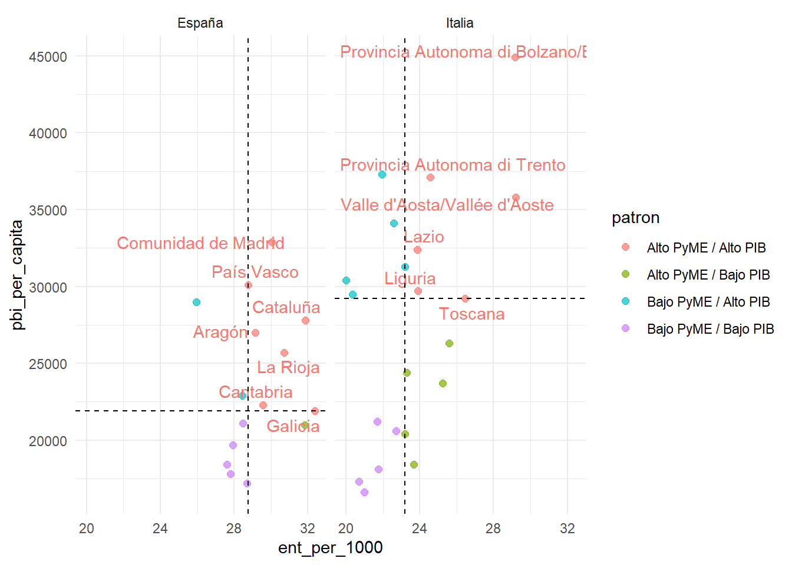
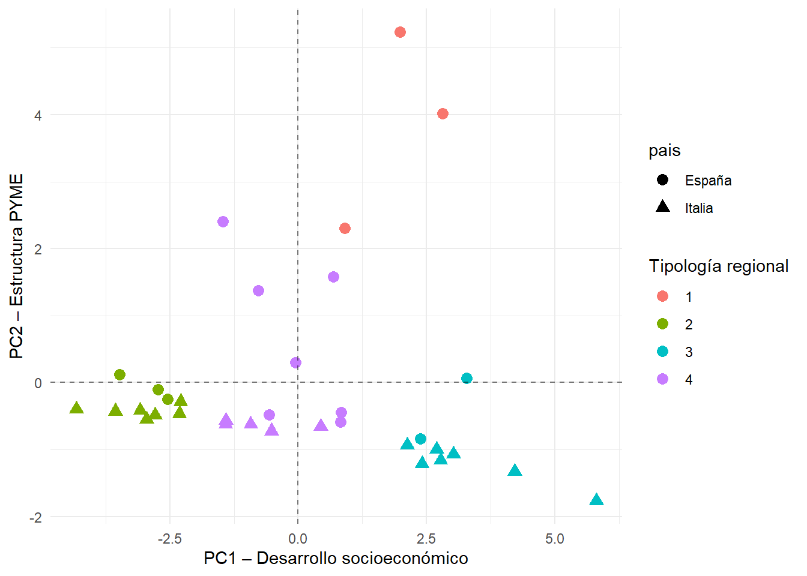
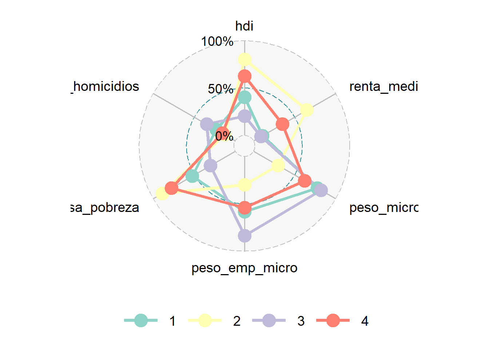
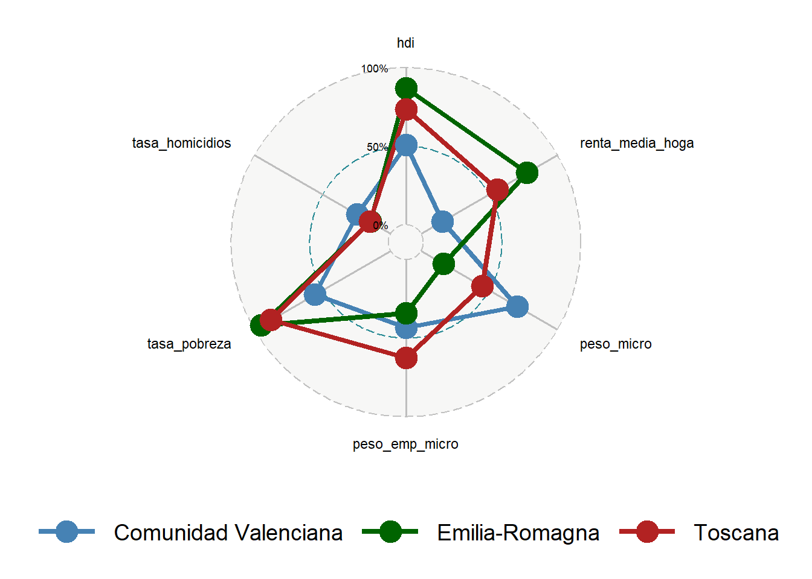

library(tidyverse)
library(here)
library(skimr)
library(scales)
library(GGally)
library(ggrepel)
library(patchwork)
library(FactoMineR)
library(factoextra)
library(cluster)
library(ggradar)Informe limpio para Italia y España
Archivo de análisis inicial sobre las regiones de italia y españa.
Setup y carga de datos
# Control
ita_control <- read_csv(here("data","processed","variables","it","control.csv")) |>
mutate(anio = year(anio), pais = "Italia")Rows: 336 Columns: 17
── Column specification ────────────────────────────────────────────────────────
Delimiter: ","
chr (9): id_region, region, renta_media_hogar_unidad, pbi_per_capita_unidad...
dbl (7): renta_media_hogar, pbi_per_capita, densidad_pobl, pobl_total, tasa...
date (1): anio
ℹ Use `spec()` to retrieve the full column specification for this data.
ℹ Specify the column types or set `show_col_types = FALSE` to quiet this message.es_control <- read_csv(here("data","processed","variables","es","control.csv")) |>
mutate(anio = year(anio), pais = "España")Rows: 628 Columns: 21
── Column specification ────────────────────────────────────────────────────────
Delimiter: ","
chr (11): id_region, region, renta_media_hogar_unidad, pbi_per_capita_unida...
dbl (9): renta_media_hogar, pbi_per_capita, densidad_pobl, hdi, gini, tasa...
date (1): anio
ℹ Use `spec()` to retrieve the full column specification for this data.
ℹ Specify the column types or set `show_col_types = FALSE` to quiet this message.# PyMEs
ita_pymes <- read_csv(here("data","processed","variables","it","pymes.csv"))Rows: 6936 Columns: 32
── Column specification ────────────────────────────────────────────────────────
Delimiter: ","
chr (3): pais, region, tramo
dbl (29): anio, ent_nr, ent_brth_nr, ent_dth_nr, ent_srvl_y3_nr, emp_nr, sal...
ℹ Use `spec()` to retrieve the full column specification for this data.
ℹ Specify the column types or set `show_col_types = FALSE` to quiet this message.es_pymes <- read_csv(here("data","processed","variables","es","pymes.csv"))Rows: 4272 Columns: 32
── Column specification ────────────────────────────────────────────────────────
Delimiter: ","
chr (3): pais, region, tramo
dbl (29): anio, ent_nr, ent_brth_nr, ent_dth_nr, ent_srvl_y3_nr, emp_nr, sal...
ℹ Use `spec()` to retrieve the full column specification for this data.
ℹ Specify the column types or set `show_col_types = FALSE` to quiet this message.# Unión
df_eu <- bind_rows(
ita_control |>
select(-matches("^pais$")) |>
inner_join(ita_pymes |> select(-matches("^pais$")),
by = c("region","anio")) |>
mutate(pais = "Italia"),
es_control |>
select(-matches("^pais$")) |>
inner_join(es_pymes |> select(-matches("^pais$")),
by = c("region","anio")) |>
mutate(pais = "España")
)Warning in inner_join(select(es_control, -matches("^pais$")), select(es_pymes, : Detected an unexpected many-to-many relationship between `x` and `y`.
ℹ Row 1 of `x` matches multiple rows in `y`.
ℹ Row 3939 of `y` matches multiple rows in `x`.
ℹ If a many-to-many relationship is expected, set `relationship =
"many-to-many"` to silence this warning.Creamos indicadores
Indicadores básicos: empresas cada 1000 habitantes y una “tasa de empleo”, que es empleo cada 100 habitantes (No es PET).
df_eu <- df_eu |>
mutate(
ent_per_1000 = ent_nr / pobl_total * 1000,
tasa_empleo = emp_nr / pobl_total * 100
)Indicadores más detallados
# Peso por número de empresas
df_peso_ent <- df_eu |>
filter(tramo != "TOTAL") |>
group_by(pais, id_region, region, anio, pobl_total, tramo) |>
summarise(ent = sum(ent_nr, na.rm = TRUE), .groups = "drop") |>
pivot_wider(names_from = tramo, values_from = ent, values_fill = 0) |>
rename(
ent_0 = `0`,
ent_micro = `1 a 9`,
ent_no_micro = `+10`
) |>
mutate(
ent_con_empleo = ent_micro + ent_no_micro,
peso_micro = ent_micro / ent_con_empleo,
ratio_micro_no_micro = ent_micro / ent_no_micro,
peso_autoempleo = ent_0 / (ent_0 + ent_con_empleo),
micro_per_1000 = ent_micro / pobl_total * 1000
) |>
select(pais, id_region, region, anio,
peso_micro, ratio_micro_no_micro,
peso_autoempleo, micro_per_1000)
# Peso por empleo
df_peso_emp <- df_eu |>
filter(tramo != "TOTAL") |>
group_by(pais, id_region, region, anio, pobl_total, tramo) |>
summarise(emp = sum(emp_nr, na.rm = TRUE), .groups = "drop") |>
pivot_wider(names_from = tramo, values_from = emp, values_fill = 0) |>
rename(
emp_0 = `0`,
emp_micro = `1 a 9`,
emp_no_micro = `+10`
) |>
mutate(
emp_con_empleo = emp_micro + emp_no_micro,
peso_emp_micro = emp_micro / emp_con_empleo,
ratio_emp_micro_no_micro = emp_micro / emp_no_micro,
peso_autoempleo_emp = emp_0 / (emp_0 + emp_con_empleo),
emp_micro_per_1000 = emp_micro / pobl_total * 1000
) |>
select(pais, id_region, region, anio,
peso_emp_micro, ratio_emp_micro_no_micro,
peso_autoempleo_emp, emp_micro_per_1000)
# Unión a la base principal
df_eu <- df_eu |>
left_join(df_peso_ent,
by = c("pais","id_region","region","anio")) |>
left_join(df_peso_emp,
by = c("pais","id_region","region","anio"))Base con medias
Hago medias de las variables por región, en vez de usar uno de los años.
df_reg <- df_eu |>
group_by(pais, id_region, region, tramo) |>
summarise(
across(
c(
pbi_per_capita, renta_media_hogar, gini, hdi,
tasa_pobreza, tasa_homicidios, densidad_pobl,
ent_per_1000, tasa_empleo,
peso_micro, ratio_micro_no_micro, peso_autoempleo,
peso_emp_micro, ratio_emp_micro_no_micro,
peso_autoempleo_emp, micro_per_1000, emp_micro_per_1000
),
mean, na.rm = TRUE
),
.groups = "drop"
)Warning: There was 1 warning in `summarise()`.
ℹ In argument: `across(...)`.
ℹ In group 1: `pais = "España"`, `id_region = "ES11"`, `region = "Galicia"`,
`tramo = "+10"`.
Caused by warning:
! The `...` argument of `across()` is deprecated as of dplyr 1.1.0.
Supply arguments directly to `.fns` through an anonymous function instead.
# Previously
across(a:b, mean, na.rm = TRUE)
# Now
across(a:b, \(x) mean(x, na.rm = TRUE))Distribución
¿Cómo se distribuyen las empresas por tamaño y por país?
df_eu |>
filter(tramo != "TOTAL") |>
filter(anio == max(anio, na.rm = TRUE)) |>
ggplot(aes(tramo, ent_nr, fill = pais)) +
geom_boxplot() +
scale_y_log10() +
theme_minimal() +
labs(
x = "Tamaño de empresa",
y = "Número de empresas (log)",
title = "Distribución del tamaño empresarial"
)
Correlaciones
df_reg |>
select(pais, peso_micro, pbi_per_capita, tasa_pobreza, hdi) |>
ggpairs(aes(color = pais, alpha = 0.4)) +
theme_minimal() +
labs(title = "Correlaciones Cruzadas por País")Warning: Removed 16 rows containing non-finite outside the scale range
(`stat_boxplot()`).Warning: Removed 8 rows containing non-finite outside the scale range
(`stat_boxplot()`).`stat_bin()` using `bins = 30`. Pick better value `binwidth`.Warning: Removed 16 rows containing missing valuesWarning: Removed 8 rows containing missing values`stat_bin()` using `bins = 30`. Pick better value `binwidth`.Warning: Removed 16 rows containing missing values
Removed 8 rows containing missing values`stat_bin()` using `bins = 30`. Pick better value `binwidth`.Warning: Removed 16 rows containing non-finite outside the scale range
(`stat_bin()`).Warning: Removed 16 rows containing missing values or values outside the scale range
(`geom_point()`).
Removed 16 rows containing missing values or values outside the scale range
(`geom_point()`).Warning: Removed 16 rows containing non-finite outside the scale range
(`stat_density()`).Warning: Removed 24 rows containing missing values`stat_bin()` using `bins = 30`. Pick better value `binwidth`.Warning: Removed 8 rows containing non-finite outside the scale range
(`stat_bin()`).Warning: Removed 8 rows containing missing values or values outside the scale range
(`geom_point()`).
Removed 8 rows containing missing values or values outside the scale range
(`geom_point()`).Warning: Removed 24 rows containing missing values or values outside the scale range
(`geom_point()`).Warning: Removed 8 rows containing non-finite outside the scale range
(`stat_density()`).
#Relaciones bivariadas
df_reg |>
ggplot(aes(peso_micro, pbi_per_capita, color = pais)) +
geom_point(alpha = 0.7) +
geom_smooth(method = "loess", se = FALSE) +
theme_minimal() +
labs(
x = "Microempresas cada 1000 habitantes",
y = "PIB per cápita"
)`geom_smooth()` using formula = 'y ~ x'
ggplot(df_reg,
aes(peso_emp_micro, pbi_per_capita, color = pais)) +
geom_point(alpha = 0.7) +
geom_smooth(method = "loess", se = FALSE) +
theme_minimal() +
labs(
x = "Peso del empleo en microempresas",
y = "PIB per cápita"
)`geom_smooth()` using formula = 'y ~ x'
ggplot(df_reg, aes(ratio_micro_no_micro, tasa_homicidios, color = pais)) +
geom_point() +
geom_smooth(method = "loess", se = FALSE) +
scale_x_log10() +
theme_minimal()`geom_smooth()` using formula = 'y ~ x'Warning: Removed 16 rows containing non-finite outside the scale range
(`stat_smooth()`).Warning: Removed 16 rows containing missing values or values outside the scale range
(`geom_point()`).
#log en el ratio?Cuadrantes regionales
Busco las benchmarks
ultimo_anio <- max(df_eu$anio, na.rm = TRUE)
df_quad <- df_eu |>
filter(anio == ultimo_anio, tramo == "1 a 9") |>
distinct(pais, region, .keep_all = TRUE) |>
group_by(pais) |>
mutate(
med_pyme = median(ent_per_1000, na.rm = TRUE),
med_pbi = median(pbi_per_capita, na.rm = TRUE),
patron = case_when(
ent_per_1000 >= med_pyme & pbi_per_capita >= med_pbi ~ "Alto PyME / Alto PIB",
ent_per_1000 < med_pyme & pbi_per_capita >= med_pbi ~ "Bajo PyME / Alto PIB",
ent_per_1000 >= med_pyme & pbi_per_capita < med_pbi ~ "Alto PyME / Bajo PIB",
TRUE ~ "Bajo PyME / Bajo PIB"
)
) |>
ungroup()
ggplot(df_quad,
aes(ent_per_1000, pbi_per_capita, color = patron)) +
geom_point(size = 2, alpha = 0.7) +
geom_text_repel(
aes(label = if_else(patron == "Alto PyME / Alto PIB", region, NA_character_)),
show.legend = FALSE
) +
geom_vline(aes(xintercept = med_pyme), linetype = "dashed") +
geom_hline(aes(yintercept = med_pbi), linetype = "dashed") +
facet_wrap(~ pais) +
theme_minimal()Warning: Removed 4 rows containing missing values or values outside the scale range
(`geom_point()`).Warning: Removed 27 rows containing missing values or values outside the scale range
(`geom_text_repel()`).
PCA y Tipologías regionales
vars_pca <- c(
"renta_media_hogar", "pbi_per_capita", "hdi", "tasa_homicidios","tasa_pobreza", "densidad_pobl",
"peso_micro", "ratio_micro_no_micro",
"peso_emp_micro", "ratio_emp_micro_no_micro",
"emp_micro_per_1000", "micro_per_1000"
)
#Estandarización z score
df_std <- df_reg |>
mutate(across(all_of(vars_pca), ~ as.numeric(scale(.)))) |>
drop_na(all_of(vars_pca))pca <- PCA(df_std |> select(all_of(vars_pca)),
scale.unit = FALSE, graph = FALSE)
scores <- as.data.frame(pca$ind$coord[,1:2])
df_pca <- bind_cols(df_std |> select(pais, region), scores)
pca$var$coord # veo que variables pesan mas Dim.1 Dim.2 Dim.3 Dim.4
renta_media_hogar -0.87438100 -0.136024102 0.19124767 -0.074186588
pbi_per_capita -0.82661559 -0.081923566 0.12248180 -0.002570429
hdi -0.86076991 0.044741862 -0.05287082 0.228113899
tasa_homicidios 0.60423193 -0.100911598 0.74644589 0.193706175
tasa_pobreza 0.87533491 -0.040595055 0.17805236 -0.171777513
densidad_pobl -0.05132685 0.008093620 0.06874680 0.019532294
peso_micro 0.86573115 0.075094510 -0.20960110 0.368631747
ratio_micro_no_micro 0.89514145 0.003384842 -0.11268940 0.332604873
peso_emp_micro 0.87589061 -0.274041363 -0.11325939 -0.274385183
ratio_emp_micro_no_micro 0.85693781 -0.316765453 -0.02111055 -0.208174190
emp_micro_per_1000 0.18186262 0.995063002 0.06117709 -0.116498234
micro_per_1000 0.21244971 0.994363191 0.03814711 -0.062464523
Dim.5
renta_media_hogar 0.13298656
pbi_per_capita 0.13610472
hdi 0.16831129
tasa_homicidios 0.08800036
tasa_pobreza -0.28624373
densidad_pobl -0.05737438
peso_micro 0.03917926
ratio_micro_no_micro 0.08321383
peso_emp_micro 0.26368381
ratio_emp_micro_no_micro 0.23003844
emp_micro_per_1000 0.09298577
micro_per_1000 0.06920161pca$eig eigenvalue percentage of variance cumulative percentage of variance
comp 1 6.4532064646 61.912167760 61.91217
comp 2 2.1991106749 21.098303576 83.01047
comp 3 0.7230857220 6.937296176 89.94777
comp 4 0.5075700578 4.869635389 94.81740
comp 5 0.3018515708 2.895968879 97.71337
comp 6 0.1505444970 1.444326352 99.15770
comp 7 0.0442626268 0.424656362 99.58235
comp 8 0.0206745649 0.198352112 99.78071
comp 9 0.0127407199 0.122234674 99.90294
comp 10 0.0053957166 0.051766593 99.95471
comp 11 0.0042459003 0.040735236 99.99544
comp 12 0.0004749723 0.004556892 100.00000set.seed(123)
k4 <- kmeans(df_pca[,c("Dim.1","Dim.2")], centers = 4, nstart = 25)
df_pca$cluster <- factor(k4$cluster)ggplot(df_pca,
aes(Dim.1, Dim.2, color = cluster, shape = pais)) +
geom_point(size = 3) +
geom_hline(yintercept = 0, linetype = "dashed", alpha = 0.5) +
geom_vline(xintercept = 0, linetype = "dashed", alpha = 0.5) +
labs(
x = "PC1 – Desarrollo socioeconómico",
y = "PC2 – Estructura PYME",
color = "Tipología regional"
) +
theme_minimal()
Supongo que la tipología que nos interesa es la 1, raro lo poco de italia.
Radar por clusters
vars_radar <- c(
"hdi", "renta_media_hogar",
"peso_micro", "peso_emp_micro",
"tasa_pobreza", "tasa_homicidios"
)
#min max y valores más altos = mejor situación
# es decir: valores normalizados (0–1), mayor valor indica mejor desempeño
df_radar <- df_reg |>
select(pais, region, all_of(vars_radar)) |>
mutate(
tasa_pobreza = -tasa_pobreza,
tasa_criminalidad = -tasa_homicidios
) |>
mutate(across(all_of(vars_radar), ~ rescale(.)))
df_radar_cluster <- df_radar |>
left_join(df_pca |> select(region, cluster), by = "region") |>
group_by(cluster) |>
summarise(across(all_of(vars_radar), mean, na.rm = TRUE)) |>
rename(group = cluster)Warning in left_join(df_radar, select(df_pca, region, cluster), by = "region"): Detected an unexpected many-to-many relationship between `x` and `y`.
ℹ Row 1 of `x` matches multiple rows in `y`.
ℹ Row 1 of `y` matches multiple rows in `x`.
ℹ If a many-to-many relationship is expected, set `relationship =
"many-to-many"` to silence this warning.ggradar(df_radar_cluster, legend.position = "bottom")Ignoring unknown labels:
• size : "14"
Quiero hacer un grafico radar así con regiones benchmark y regiones líderes (las que tienen alto peso mipymes y alto desarrollo local) como este:
# regiones modelo o lideres (segun nuestros antecedentes)
reg_modelo <- df_radar %>%
filter(region %in% c(
"Toscana", "Emilia-Romagna",
"Comunidad Valenciana"
))
#toscana y emilia romagna en italia
#comunidad valenciana en españa
radar_data <- reg_modelo %>%
select(region, all_of(vars_radar))
ggradar(
radar_data,
grid.min = 0,
grid.mid = 0.5,
grid.max = 1,
group.colours = c("steelblue", "darkgreen", "firebrick"),
axis.label.size = 3,
grid.label.size = 3,
legend.position = "bottom"
)Ignoring unknown labels:
• size : "14"
Probar otras regiones
Antes habia probado: “Lombardia”, “Emilia-Romagna”,“Cataluña”, “País Vasco” y parecian similares, pero…